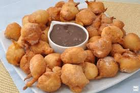

Bolinho de chuva com brigadeiro:
Ingredientes para o bolinho de chuva:
- 2 ovos
- 2 colheres (sopa) de açúcar
- 1 xícara (chá) de leite
- 2 e 1/2 xícaras (chá) de farinha de trigo
- 1 colher (sopa) de fermento
- 3 colheres (sopa) de açúcar
- 1 colher (chá) de canela
Ingredientes para o brigadeiro mole:
- 1 lata de leite condensado
- 1 colher de sopa de manteiga (manteiga, não margarina)
- 4 colheres de sopa de chocolate em pó (não é achocolatado)
Modo de preparo do bolinho de chuva:
- Bata bem os ovos com o açúcar, com ajuda de um fuê, acrescente a baunilha, bata bem. Acrescente o leite e a farinha alternadamente, sempre mexendo bem. Por ultimo agregue o fermento em pó.
- Com ajuda de duas colheres molde os bolinhos e coloque para fritar até estarem dourados. Retire deixe no papel toalha para absorver o excesso de óleo, passe no açúcar com canela.
- Dica: a temperatura do óleo é essencial, tem que estar baixa, quando ver que os bolinhos começam a fritar mais rápido, que o óleo já esta quente, tire-o do fogo por 1 min. Se os bolinhos fritarem muito rápido em óleo quente, eles ficaram dourados por fora e crus por dentro.
Modo de preparo do brigadeiro:
- Em uma panela misture todos os ingredientes e leve ao fogo baixo, mexendo sempre, até o ponto desejado (este brigadeiro deve ficar mole para a calda, não precisa esperar o ponto de tirar de desgrudar o fundo da panela, neste quem manda no ponto é você a forma q prefere). após desligar o fogo continue mexendo por um tempo isso deixara o brigadeiro mais brilhoso. Sirva quente junto dos bolinhos (molhe os bolinhos da cobertura)
